埼玉県加須市・1963年創業
容器から中身まで、
ぜんぶ自社で。
プラスチック容器を自社で成型し、液を調合し、充填して、自社の物流センターから出荷します。自動車用ウォッシャー液、クーラント、ブレーキ液。企画・研究・開発から製造・品質管理・配送までを一元管理しているからこそ、細かいオーダーにも応えられます。
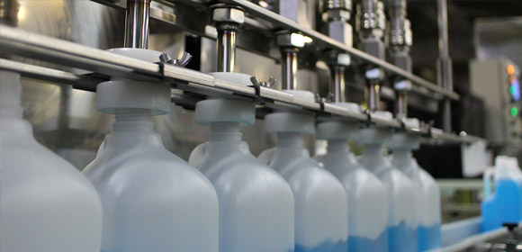
25万本/日
最大生産量
32基
自動充填ライン
28台
容器成型機
3,000万本/年
自社での容器成型
INTEGRATED MANUFACTURING
一貫製造の流れ
製品の企画、研究、開発から製造、品質管理、配送までを自社で一元管理しています。各生産体制での厳しいチェックはもちろん、技術・製造・管理部門が一体となった協力体制で「信頼される製品造り」を目指しています。
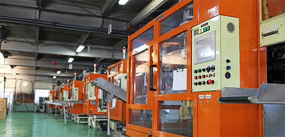
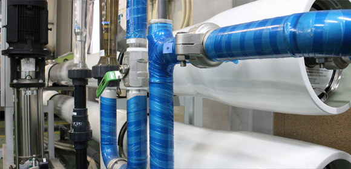
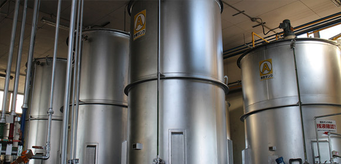
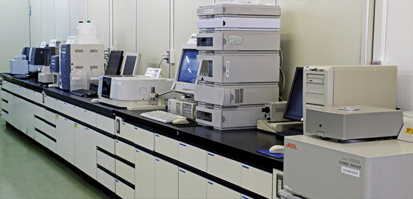
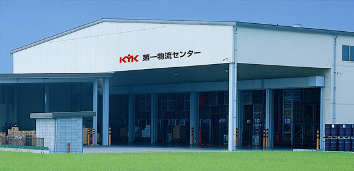
CAPACITY
大量発注にも応えられます
| 容器成型機 | PE・PET・PP 28台（年間3,000万本の成型） |
|---|---|
| 自動充填ライン | 32基 50mL〜1,000Lに対応 |
| 1日の生産量 | 最大 25万本 |
| 自動倉庫 | 2,701パレット（2001年3月に増設） |
| 工場敷地面積 | 32,000㎡（9,700坪） |
| 工場面積 | 16,500㎡（5,000坪） |
| 物流センター | コンピューターで管理された3,000tを超える自社物流センターを稼働。関東の中心という立地を活かし、必要な数を指定の日に指定の場所へ供給 |
OEM・PB製品
自社ブランド製品だけでなく、多くのOEM・PB製品を提供しています。50年を超える経験と実績の中から蓄積したノウハウがあります。
容器デザインから
実際にユーザーの手に触れるものだから、容器の形状は重要なファクターです。専任のデザイン部門があり、オリジナリティのある容器やパッケージデザイン、カタログ等の販促品もお客様と一緒に開発できます。
危険物・毒劇物にも対応
1976年に毒物・劇物の製造および販売許可を取得。危険物製造所・危険物倉庫を備えています。1998年には化粧品製造業の許可も取得しました。
QUALITY
認証と検査体制
開発だけでなく、製造・管理・配送にあたる従業員一人ひとりのたゆまぬ努力により、すべての場面でのクオリティ・コントロールが実現し、日本工業規格認証工場（JIS）およびISO9001を取得しました。
| 取得年 | 内容 |
|---|---|
| 1976年10月 | 毒物・劇物の製造および販売許可 |
| 1985年 9月 | 不凍液・ロングライフクーラント液の製造に伴い、JISマーク表示認定工場となる |
| 1998年 4月 | 化粧品製造業の許可を取得、製造を開始 |
| 2005年 8月 | ISO9001 認証取得 |
| 2008年 4月 | 新JISマークを取得 |
| 2009年 4月 | ブレーキ液JIS認証取得 |
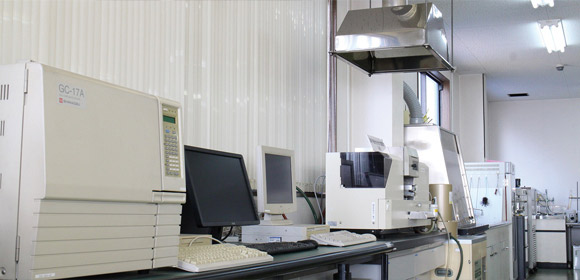
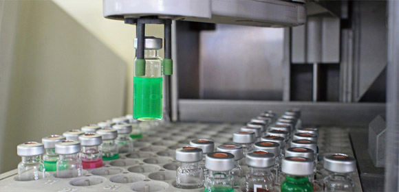
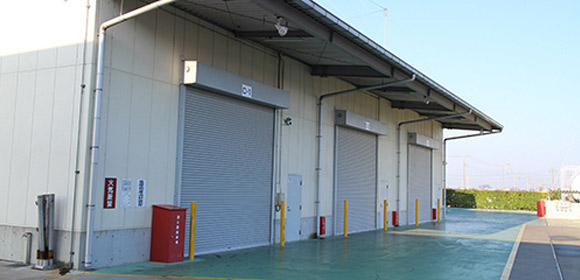
PRODUCTS
製品分類
自動車用ケミカル製品を基本に、13の分類で製品を展開しています。
- ウインド関連
- 洗車関連
- トリガー関連
- バッテリー関連
- 精製水
- LLC・不凍液
- ラジエータ関連
- ブレーキ関連
- 凍結防止剤・ブライン
- 燃料関連
- PRO（業務用）製品
- ハンドクリーナー関連
- オイルジョッキ関連
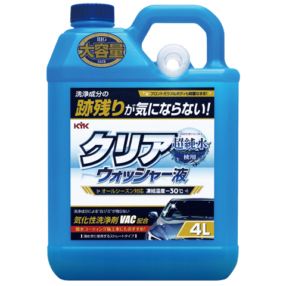
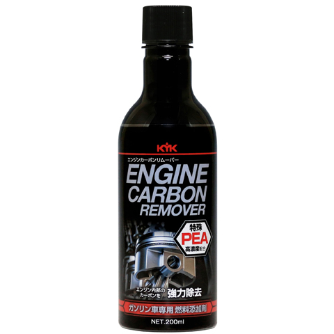
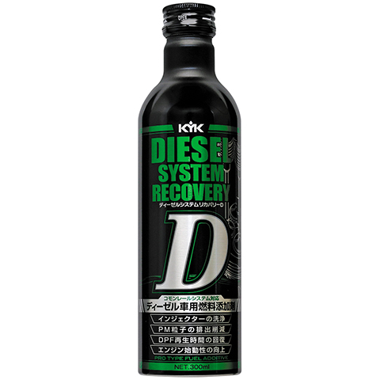
COMPANY
会社案内
- 会社名
- 古河薬品工業株式会社（KOGA Chemical Mfg Co., Ltd.）
- 本社
- 埼玉県加須市柏戸740
TEL 0280-62-1011 ／ FAX 0280-62-0650 - 西日本支店
- 奈良県奈良市中登美ヶ丘4-1-7-301
TEL 0742-41-3702 ／ FAX 0742-41-3792 - 物流センター
- 埼玉県加須市柏戸897-1／埼玉県加須市柏戸曽根2118-1
TEL 0280-62-5151 ／ FAX 0280-62-1014 - 事業内容
- 1）自動車ケミカル製品の製造および販売
2）清浄用化粧品の製造および販売 - 創業
- 1963年3月10日
- 設立
- 1970年5月9日
- 資本金
- 3,000万円
- 役員
- 取締役会長 岡田 喜三郎
代表取締役社長 小倉 博
常務取締役 藤田 真潮 - 従業員数
- 140名
- 工場敷地面積
- 32,000㎡（9,700坪）
- 工場面積
- 16,500㎡（5,000坪）
- 取引銀行
- みずほ銀行 大宮支店／足利銀行 古河支店／常陽銀行 古河支店
沿革
茨城県古河市で自動車用品の販売として始まり、埼玉県に移って製造へ。容器成型、充填ライン、危険物、化粧品、ブレーキ液と、できることを一つずつ増やしてきた記録です。
- 1963.03
- 自動車用品の製造販売業として茨城県古河市に開業
- 1966.03
- 埼玉県北埼玉郡北川辺町（現・加須市）に移転し、バッテリー補充液・ウインドウォッシャー液等の自動車用ケミカル製品の製造に着手
- 1970.05
- 規模の拡大に伴い組織を株式会社として設立
- 1976.10
- 毒物・劇物の製造および販売許可を取得
- 1984.09
- プラスチック容器成型工場を建築
- 1985.09
- 不凍液・ロングライフクーラント液の製造に伴い、JISマーク表示認定工場となる
- 1986.08
- 自動充填ライン工場を新設（製造能力 日産20万本）
- 1988.05
- プラスチック成型工場を増設
- 1991.10
- 第二危険物製造所、危険物倉庫、第三工場を建築
- 1995.04
- 生産効率の向上として、パレタイザーロボットを導入
- 1996.07
- 第三危険物製造所および本社に新規物流センターを建築
- 1998.04
- 化粧品製造業の許可を取得、製造を開始
- 1999.05
- 西日本支店を奈良県奈良市に開設
- 2001.03
- 自動倉庫の能力を2,701パレットに増設
- 2002.08
- 新本社事務所を建築
- 2003.05
- 社内オンラインシステムを導入
- 2004.03
- 乳化製造設備を導入し、乳化製品の製造を開始
- 2005.08
- ISO9001 認証取得
- 2005.10
- 成型品用 自動超音波カッターの開発・導入。第二危険物倉庫・屋外危険物貯蔵所を増設
- 2008.04
- 新JISマークを取得
- 2009.04
- ブレーキ液JIS認証を取得
- 2010.09
- ブレーキ液専用工場を建築
- 2013.09
- PET成型機を導入し、製造を開始
- 2013.11
- 新規物流倉庫を建築
- 2022.04
- 第4工場を稼働
中身も容器も、まとめて相談できます。
既存容器なら素早い製品化が可能です。オリジナルの成型、パッケージデザイン、カタログ等の販促品まで、専任のデザイン部門と一緒に開発できます。OEM・PB製品のご相談もお受けします。
0280-62-1011
FAX 0280-62-0650
埼玉県加須市柏戸740